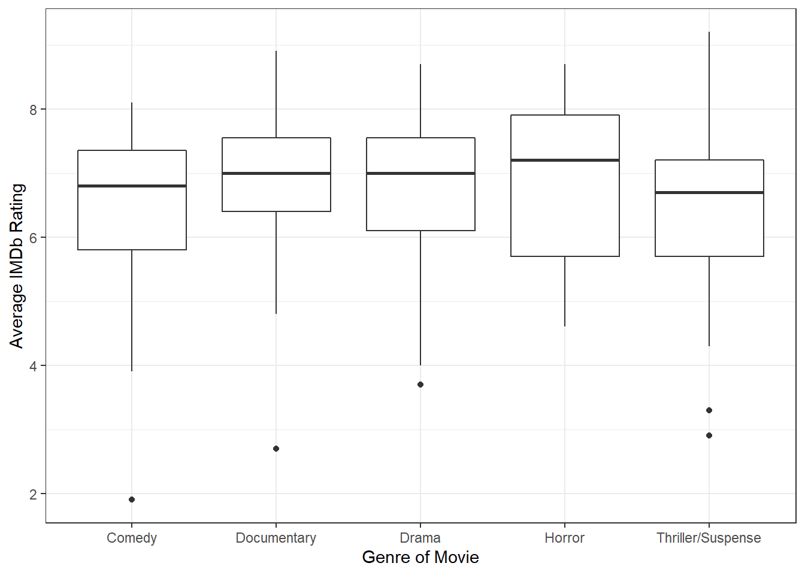
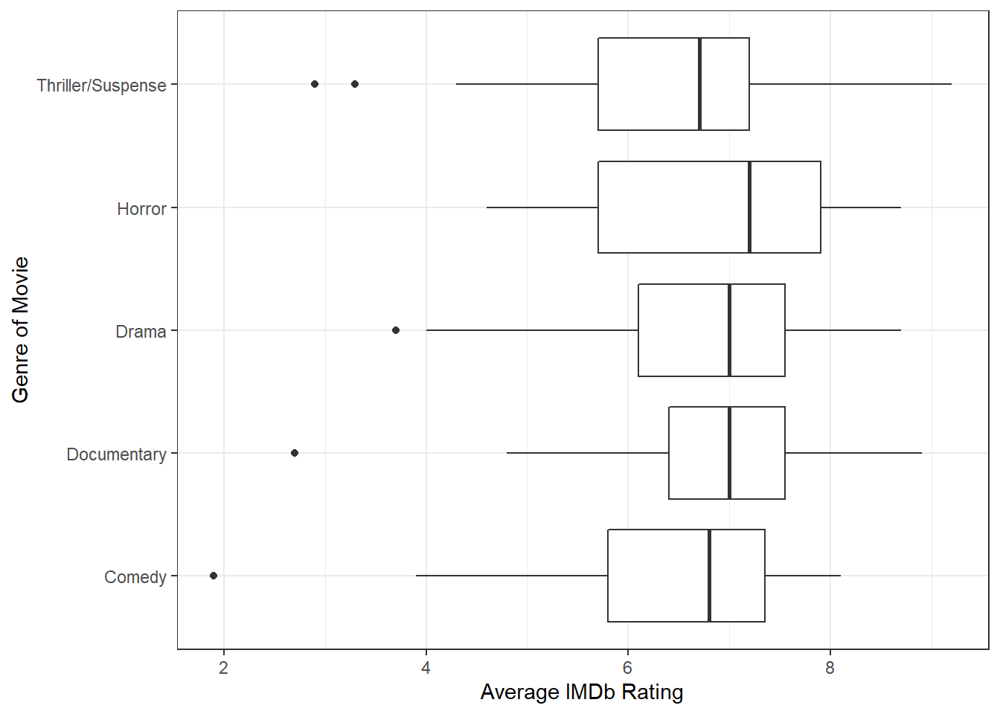
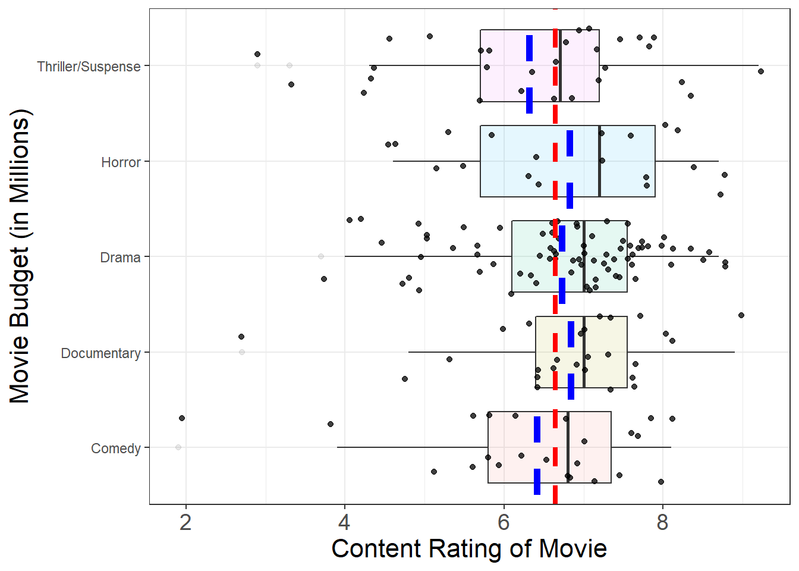

| Genre | n |
|---|---|
| Action | 14 |
| Adventure | 16 |
| Black Comedy | 4 |
| Comedy | 23 |
| Documentary | 26 |
| Drama | 75 |
| Horror | 19 |
| Multiple Genres | 1 |
| Musical | 5 |
| Romantic Comedy | 3 |
| Thriller/Suspense | 29 |
Week 7: Introduction to ANalysis Of Variance


Learning outcomes
Terminology review
Thinking back to last week, we covered how we could do comparisons for (1) a difference in two means, and (2) the mean of the differences.
- Analyzing a difference in two means requires the observations in each group are independent
- Analyzing the mean difference requires there are paired (two) observations for each observational unit
Movies released in 2020
Today we’re going to use a dataset we explored in Week 2, to visualize the distribution of IMDB movie ratings. The dataset is comprised of the following variables colleged on each movie:
| Variable | Description |
|---|---|
Movie |
Title of the movie |
averageRating |
Average IMDb user rating score from 1 to 10 |
numVotes |
Number of votes from IMDb users |
Genre |
Categories the movie falls into (e.g., Action, Drama, etc.) |
2020 Gross |
Gross profit from movie viewing |
runtimeMinutes |
Length of movie (in minutes) |
Comparing Many Groups
Last week, we could have used these data to investigate if there were differences in IMDb scores between two genres (e.g., Action and Drama). This week, however, we are going to expand our analysis to more than two groups!
Below is a table summarizing the number of observations (movies) in the dataset for each genre. We can see that most of the movies fall in the Action, Adventure, Comedy, Documentary, Drama, Horror, and Thriller/Suspense categories. So, let’s focus our analysis with these genres (removing the others).
Visualizing a Single Categorical and a Single Quantitative Variable
For a categorical variable that has more than two groups, we can use the same visualization techniques as we did for a categorical variable with two groups.
- Think back to last week, what were two ways we visualized one numerical variable and one categorical variable?
Side-by-Side Boxplots
The boxplot of movie budgets (in millions) by content rating is plotted using the code below. The boxplots are presented in both orientations, horizontal stacking and vertical stacking, so you can pick whichever orientation you prefer. :)


Answer the following questions about the boxplots above.
- Which genre has the highest center?
- Which genre has the largest spread?
- Which genre has the most skewed distribution?
Summary Statistics
Let’s obtain a more complete picture of how different these groups are with summary statistics. Our familiar friend favstats() can help us compare summary statistics across different groups.
Like before, the rating of the film is the response and the genre is the explanatory variable. So, our code looks like:
favstats(averageRating ~ Genre,
data = movie_ratings) Genre min Q1 median Q3 max mean sd n missing
1 Comedy 1.9 5.8 6.8 7.35 8.1 6.413043 1.413025 23 0
2 Documentary 2.7 6.4 7.0 7.55 8.9 6.834615 1.203974 26 0
3 Drama 3.7 6.1 7.0 7.55 8.7 6.729333 1.148533 75 0
4 Horror 4.6 5.7 7.2 7.90 8.7 6.826316 1.370256 19 0
5 Thriller/Suspense 2.9 5.7 6.7 7.20 9.2 6.317241 1.536478 29 0Use the output from the favstats() function to answer the following questions:
- Report the mean rating for each genre. Use appropriate notation.
- Which genres have the largest difference in their mean rating?
- Which genre has the largest standard deviation in ratings?
- Which genre has the smallest standard deviation in ratings?
- How many times larger is your answer in #6 than your answer in #7?
- Which genre has the largest sample size? What is the formula for the standard deviation of a mean? What effect does sample size have on the standard deviation?
Introducing a New Statistic
In an ANOVA, there are more than two groups that we wish to compare how different the means are from each other. We could make every comparison of two means (Drama - Action, Horror - Documentary, Comedy - Adventure, etc.), but how would we use these numbers to summarize how different all of the groups are from each other?
Enter the F-statistic! An F-statistic summarizes two quantities:
- How different the means of the groups are from each other
- How different the observations in each group are from the mean of their group
To me, an F-statistic makes more sense if I visualize what these pieces mean. In the plot below, I’ve added three pieces,
- Individual points within each group (these are the movies)
- A red line across the entire plot
- A blue line across each group
Warning: Removed 172 rows containing missing values (geom_segment).
Removed 172 rows containing missing values (geom_segment).
- What does the red line across the entire plot represent?
- What do the blue lines across each group’s boxplot represent? Hint: The blue line is different from the black line!
Components of an F-statistic
The two components of an F-statistic are called the sum of squares between groups (SSG) and the sum of squares of the errors (SSE). Let’s break down what each of these mean.
The SSG compares each group’s mean to the overall mean. As its name indicates, these differences are then squared and added together.
- Draw vertical lines on the plot above, indicating which values are being compared when calculating the SSG.
The SSE is similar to a “residual,” it measures how far an observation is from the mean of that group. As its name indicates, these differences are squared and then added together.
- Draw horizontal lines on the plot above, indicating which values are being compared with calculating the SSE.
There is one final part to an F-statistic. We take each of these quantities (SSG, SSE) and divide them by their respective degrees of freedom. The degrees of freedom are calculated based on (1) the number of items available and (2) the number of statistics that need to be calculated.
For the SSG, we have \(k\) groups and we need to calculate the overall mean. So, our resulting degrees of freedom are \(k - 1\).
- How many degrees of freedom does the
Genrevariable have?
For the SSE, we have \(n\) observations and we need to calculate \(k\) group means. So, our resulting degrees of freedom are \(n - k\).
- How many degrees of freedom does the SSE for our content rating analysis have?
Now, putting all of these pieces together, we can obtain the magical F-statistic using the following formula:
\[\frac{\frac{SSG}{k-1}}{\frac{SSE}{n-k}} = \frac{MSG}{MSE}\]
- Can an F-statistic be negative?
Calculating an F-statistic in R
Calculating these quantities by hand would be terrible! Instead, we will use R to output these values.
The aov() function in R stands for analysis of variance. Why they didn’t call it anova() is beyond me!
The aov() function takes two inputs, the first is a “formula” similar to what you’ve seen in the favstats() function. The response variable comes first, then the explanatory variable. The second input is the dataset that should be used.
Let’s give the code and the output a look!
| term | df | sumsq | meansq | statistic | p.value |
|---|---|---|---|---|---|
| Genre | 4 | 6.445565 | 1.611391 | 0.9691143 | 0.425987 |
| Residuals | 167 | 277.678621 | 1.662746 | NA | NA |
- What is the sum of squares for
Genre?
- What is the sum of squares for the errors?
- How was the mean squares for
Genrefound?
- How was the mean squares for the errors found?
- What is the resulting F-statistic?
- Why is there an NA in the
statisticcolumn for theResiduals?
Inference for an ANOVA
- Based on the p-value associated with the F-statistic you found in #18, do you think this is a small F-statistic or a large F-statistic?
- Do you believe this statistic is likely to occur if the null hypothesis is true?